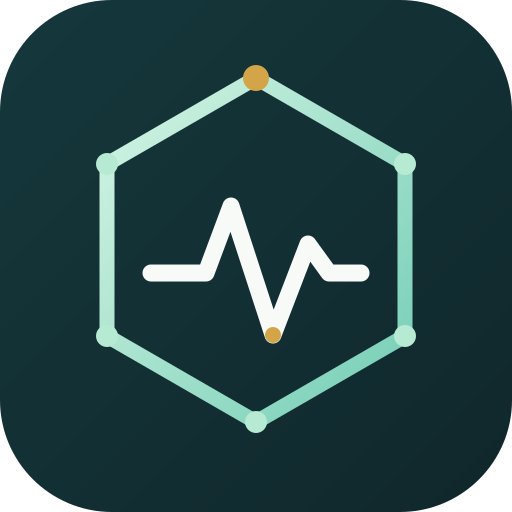

UALS — المنصة المخبرية التحليلية الموحّدة
أدوات علمية وأبحاث لمجالات تحليلية متعددة
🧪 مساعد فني المختبر
🔬 محلل GC-MS
📈 التحقق من HPLC
🧭 دليل GC-MS ثلاثي الأبعاد
العربية
English
Deutsch
فتح التطبيق الحالي في نافذة مستقلة ↗